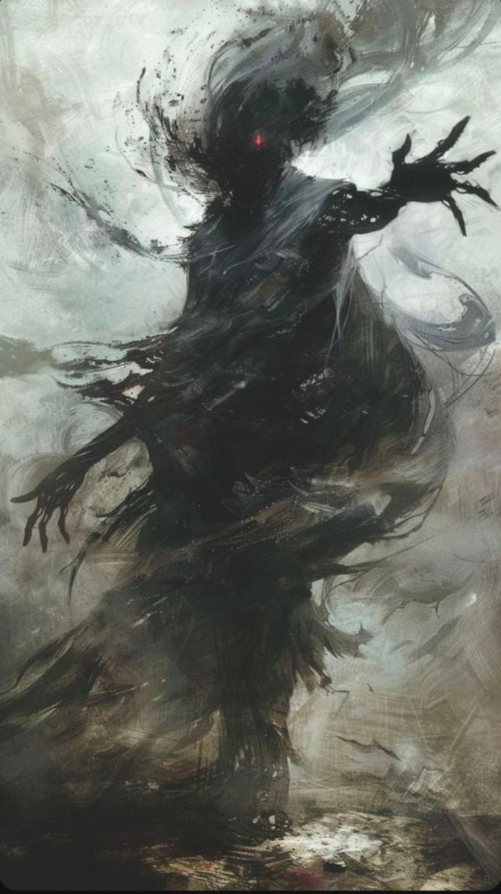

Logrian народився в ельфійському місті, де дерева сягають неба, а знання цінуються більше за золото. Він був тихою дитиною, але з очима, які завжди шукали щось більше, ніж бачили інші. Поки його ровесники тренувалися з луками чи вивчали магію, Logrian сидів серед книг, сувоїв і стародавніх артефактів. Він не просто читав — він досліджував. Він розбирав кожну легенду, кожен міф, кожну формулу, ніби намагався знайти в них приховану істину.
За сто років свого життя він відкрив більше, ніж деякі ельфи за тисячоліття. Він створював речі, які полегшували життя: інструменти, що працювали без магії; ліки, які рятували тих, кого вже вважали приреченими; механізми, які рухалися так точно, ніби в них жив дух. Його рука торкалася всіх сфер знання, і кожна з них розквітала під його поглядом.
Але одного дня він натрапив на історію, яка змінила його життя. Це була легенда про Krovar — спотвореного воїна, який зник після зустрічі з хаосом. У записах згадувалася таємнича сутність, що з’являється, коли хоче, і так само зникає, залишаючи після себе викривлену реальність. Logrian відчув, що ця історія — не просто казка. Вона була викликом. І він не міг пройти повз.
Він вирушив у королівство, де востаннє бачили Krovar. Він шукав документи, свідків, будь-які сліди. Але все, що він знаходив, було уривками, чутками, напівправдою. Тоді він пішов далі — у мандри, які тривали десятиліттями. Він обходив села, міста, гори, континенти. Він розмовляв із мудрецями, шаманами, відлюдниками. Він збирав легенди, як інші збирають коштовності. Але істина вислизала.
Його віра почала згасати. Він уже майже змирився з тим, що Demonic — лише міф. Але одного дня, коли він ішов через туманну долину, повітря раптом стало важким, а світ — тихим. І він побачив його.
Demonic стояв серед туману, мов тінь, що забула, кому вона належить. Logrian не думав. Він не аналізував. Він не спостерігав, як мав би вчений. Він просто побіг уперед, ніби все його життя вело до цієї миті. І він торкнувся хаосу.
Його тіло спалахнуло. Кістки горіли, шкіра тріскалася, але свідомість залишалася ясною. Він бачив не біль — він бачив істину. Перед ним розкрився безкрайній космос, де народжувалися й помирали світи. Він бачив хаос у його первісній формі, не як зло, а як силу, що рухає все. Він бачив, як з’явився Всесвіт — не вибухом, а подихом. І він бачив Chronaar — перше створіння, народжене з часу, що спостерігало за всім від самого початку.
Коли Logrian прийшов до тями, Demonic уже не було. Туман розвіявся. Але він сам змінився. Його тіло стало іншим — легшим, швидшим, майже не прив’язаним до світу. Він міг переміщатися куди завгодно, ніби простір більше не був для нього перешкодою. Він міг бачити те, що приховано від інших. Він міг торкатися сил, які раніше були доступні лише богам.
І він зник.
Кажуть, що тепер Logrian мандрує між світами, досліджуючи все, що існує. Він приходить до богів, вивчає їхню природу, їхню силу, їхні таємниці. Він не став богом — але став тим, хто стоїть поруч із ними, рівний у знанні, хоч і не в сутності.
І коли десь у світі з’являється нове відкриття, нова істина, новий прорив — ельфи шепочуть, що це Logrian пройшов поруч, залишивши слід свого розуму.